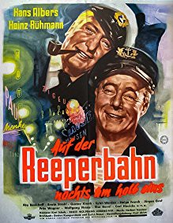

IMDB-Wertung: 5.9 / 10
IMDB-Wertung: 5.9 / 10  Metascore:
Metascore: 
Find showtimes, watch trailers, browse photos, track your Watchlist and rate your favorite movies and TV shows on your phone or tablet!
Alternativ: Reeperbahn bei Nacht (Originaltitel)
 IMDB-Wertung: 5.9 / 10 Metascore:
Find showtimes, watch trailers, browse photos, track your Watchlist and rate your favorite movies and TV shows on your phone or tablet!
Jahr: 1954
Dauer: 110 Minuten
FSK: 16
Land: West-Deutschland Studio: FilmjuwelenTonspuren:
Untertitel:
Auflösung: 1080p (1488x1080) Größe: 7823 MB
Genre: Drama, Musik, Komödie, Krimi
Regisseur: Wolfgang Liebeneiner
Drehbuch: Curt J. Braun
Soundtrack: Herbert Trantow
Darsteller:
 Heinz Rühmann als Pittes Breuer
Heinz Rühmann als Pittes BreuerDatei: X:\1950-1959\Auf der Reeperbahn nachts um halb eins (1954, FSK16, 1488x1080).mkv seit 24.02.2018
Festplatte: HD 1900-1970
 Es gibt insgesamt 141 Filme in der Gruppe '1950-1959'
Es gibt insgesamt 141 Filme in der Gruppe '1950-1959'